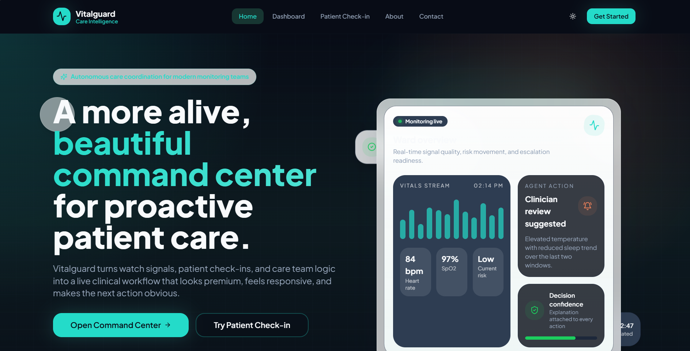
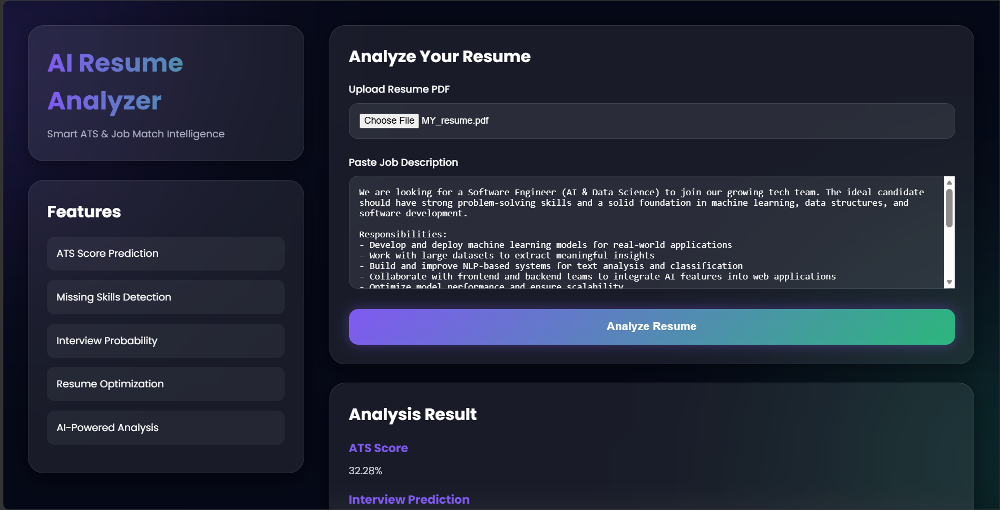
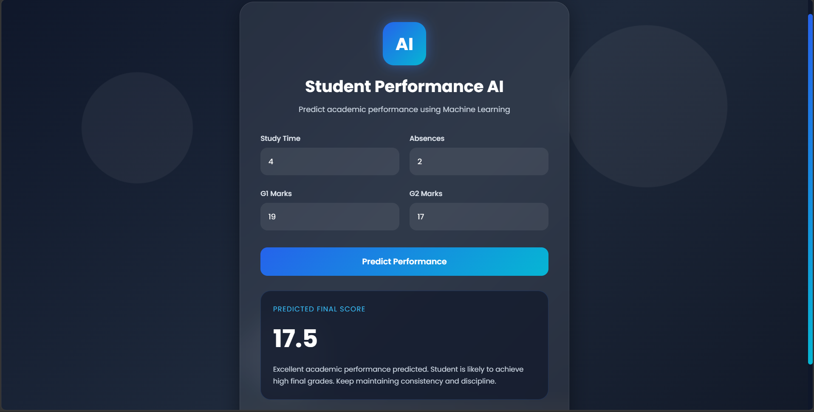
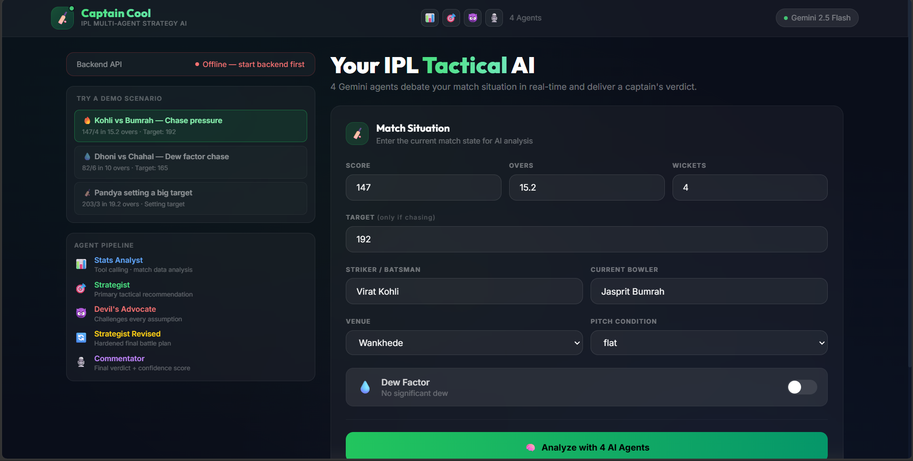
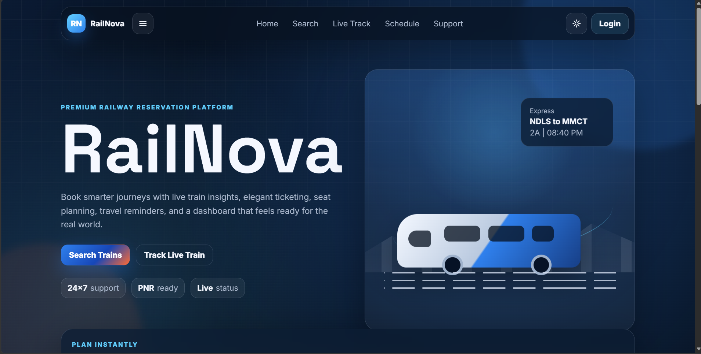
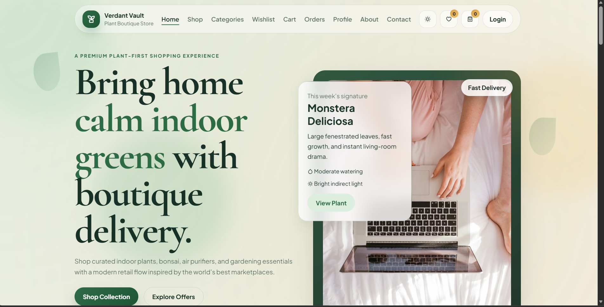
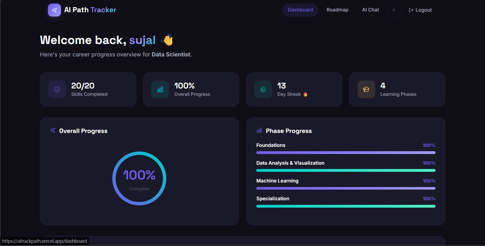
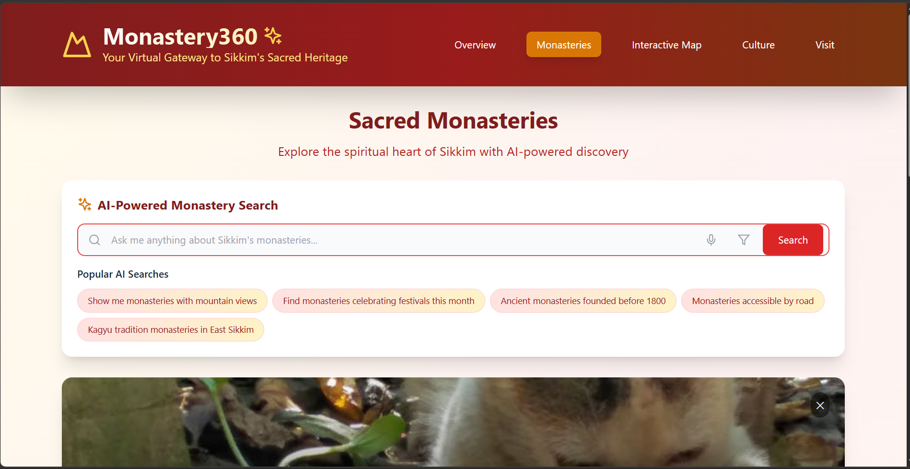

Featured Work
Crafted with modern technologies, attention to detail, and a passion for creating seamless user experiences.

Airline Booking Website
A modern airline booking system with seat selection, secure payments, and a sleek user interface designed for seamless travel planning.
View Project
OurTalks Chat App
Real-time chat application built using React and MongoDB, featuring instant messaging, user authentication, and a clean modern interface.
View Project
VitalGuardAI – AI Health Assistant
An AI-powered health analysis web application designed to assist users in understanding symptoms, health patterns, and basic medical insights through intelligent data processing. The system simulates a virtual health assistant that can analyze user inputs, provide health-related suggestions, and present structured insights in an easy-to-understand format. It focuses on improving accessibility to basic health awareness through AI-driven interaction and user-friendly design.
View Project
AI Resume Analyzer
An AI-powered resume analysis tool that evaluates resumes against job descriptions using Natural Language Processing techniques. It provides skill matching, keyword extraction, and improvement suggestions to help users optimize their resumes for better job opportunities.
View Project
Student Performance AI
An AI-based prediction system that analyzes student academic data to forecast performance and identify improvement areas. It uses machine learning techniques to evaluate study patterns, attendance, and past scores to predict final outcomes and provide personalized learning insights.
View Project
Captain Cool AI Strategist
An AI-powered cricket strategy web application that simulates a virtual team captain capable of analyzing match situations and suggesting tactical decisions in real time. It processes match context such as overs, wickets, pitch behavior, and player form to generate intelligent game strategies inspired by real-world captaincy logic.
View Project
Railway Reservation System
A fully functional frontend-based railway reservation system that simulates real-world train ticket booking workflows. It allows users to search trains, view available routes, select seats, and complete the booking process through an interactive UI. The system focuses on structured booking logic, user experience design, and state management using JavaScript.
View Project
Plants E-Commerce Website
A modern and responsive e-commerce web application designed for browsing and purchasing indoor and outdoor plants. The platform features an intuitive product catalog, category-based filtering, product detail views, and a smooth shopping experience focused on UI/UX clarity and performance. Built to simulate a real-world online plant store with a clean, nature-inspired interface and seamless navigation flow.
View ProjectFitness Tracker Website
Comprehensive fitness tracking platform with workout logging, progress monitoring, personalized goals, and BMI calculations.
View Project
AI TrackPath – Smart Project Dashboard
An AI-powered project tracking and analytics dashboard designed to monitor tasks, workflows, and project progress in a structured and intelligent way. The system provides a centralized view of project metrics, status tracking, and performance insights, simulating a modern AI-assisted project management platform. It focuses on improving productivity through organized data visualization, task flow management, and dashboard-based decision support.
View Project
Sacred System – AI Framework Interface
A futuristic AI-inspired system interface designed to simulate a structured intelligence framework with modular components and layered logic flow visualization. The project focuses on system-level thinking, presenting an abstract AI architecture where multiple modules interact to process, analyze, and evolve structured outputs. Built with a strong emphasis on immersive UI design, symbolic computation flow, and experimental AI system representation.
View Project